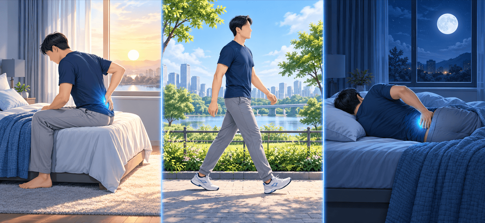

움직이면 나아지는 허리 통증 — 척추관절염을 확인할 때
허리 통증은 아주 흔하고 그중 척추관절염은 일부입니다. 서서히 시작해 아침에 심하고 움직이면 나아지는 통증의 양상과, 의심될 때 쓰는 HLA-B27 검사를 읽는 법을 자가항체 검사 강의에서 설명한 내용으로 정리했습니다.
허리 통증, 대부분은 척추관절염이 아닙니다
살면서 허리 통증을 겪는 사람
80% 이상
누구나 한 번쯤 겪습니다
만성 허리 통증 중 축성 척추관절염
5% 미만
그래서 양상을 잘 살펴봅니다
염증성 허리 통증 양상: 놓치지 않는 비율(민감도) · 가려내는 비율(특이도)
75~80% · 25~44%
양상만으로는 구별에 한계가 있습니다
 염증성 허리 통증은 하루 이렇게 흐릅니다
염증성 허리 통증은 하루 이렇게 흐릅니다

아침일어났을 때 가장 뻣뻣하고 아픕니다
낮움직이고 활동하면 나아지고, 쉬어도 좋아지지 않습니다
밤나빠져서 자다가 깹니다
 통증의 양상 — 이런 점을 진료 때 알려 주세요
통증의 양상 — 이런 점을 진료 때 알려 주세요
척추관절염을 의심하게 하는 양상
- 비교적 젊은 나이(기준표에서는 40세 이전)에 시작
- 3개월 이상 이어지는 만성 통증
- 서서히 시작해 뚜렷한 시작일이 없음
- 아침에 일어났을 때 뻣뻣하고 많이 아픔, 오래 앉아 있어도 아픔
- 움직이고 활동하면 좋아지고 쉬어도 좋아지지 않음
- 밤에 나빠져 자다가 깸, 엉덩이 통증이 좌우 번갈아 나타남
양상이 다른 경우와 참고할 점
- 어느 날 갑자기 아팠고, 움직이고 활동하거나 오래 서 있으면 더 아프다면 양상이 다릅니다.
- 의사는 위 항목 중 몇 개가 해당하는지로 판단합니다(기준표에 따라 5개 중 4개, 4개 중 2개 등).
- 소염진통제(NSAID)를 충분량 쓴 뒤 24~48시간 안에 좋아지는지도 참고하지만 완벽한 구별법은 아닙니다. 용량은 진료에서 정합니다.
 척추관절염이라면 허리 밖에서도 신호가 있습니다
척추관절염이라면 허리 밖에서도 신호가 있습니다

엉덩이뼈와 척추 사이 관절
천장관절과 척추에 염증이 생깁니다.

무릎·발목 등 팔다리 관절
말초 관절에도 염증이 올 수 있습니다.

힘줄이 뼈에 붙는 곳
아킬레스건 부위가 붓고 아픕니다(부착부염).

염증성 장질환
장의 염증 질환이 함께 있을 수 있습니다.

포도막염
눈 속 염증이 동반될 수 있습니다.
이런 양상이 있을 때 HLA-B27 검사를 해 보면 진단에 도움이 된다고 강의에서 설명했습니다(다음 쪽).
HLA-B27 검사, 이렇게 읽습니다
HLA-B27은 항체가 아니라 유전적 표지 검사입니다. 척추관절염이 의심될 때에만 의미가 있고, 건강한 사람에게 미리 해 보는 검사는 아닙니다.
 HLA-B27 결과의 의미
HLA-B27 결과의 의미
| 구분 | 내용 |
|---|
| HLA-B27이란 | 면역과 관련된 HLA class I 유전자군의 하나로, 핵이 있는 세포와 혈소판 등 적혈구를 뺀 거의 모든 세포에 나타납니다. 항체를 찾는 검사가 아니라 유전적 표지를 보는 검사입니다. |
|---|
| 척추관절염(축성 척추관절염·강직성 척추염) 환자 | 74~89%에서 HLA-B27이 양성입니다. 일반 인구에서는 1% 미만이라 척추관절염을 의심하는 데 도움이 됩니다. |
|---|
| HLA-B27이 양성인 사람 | 평생 척추관절염이 생길 위험은 2~10%(약 5%)입니다. 양성이라고 해서 대부분 병이 생기는 것은 아닙니다. |
|---|
| 누구에게 검사하나요 | 척추관절염이 의심되는 상황에서만 의미가 있습니다. 일반 인구에서 선별 목적으로 하는 것은 권고되지 않습니다. |
|---|
| 류마티스 인자(RF)와의 관계 | 류마티스 인자는 강직성 척추염에서 15% 미만, 건선관절염에서는 음성입니다. 류마티스 인자 검사와는 목적이 다릅니다. |
|---|
연자는 혈액검사를 목적이 뚜렷할 때, 임상 상황 안에서 해야 하며 완벽한 검사는 없다고 정리했습니다. 일반 인구에서 무작정 검사하면 항핵항체·ANCA도 10% 이상에서 양성으로 나옵니다.
 염증성 허리 통증 기준표의 한계 (강의 소개)
염증성 허리 통증 기준표의 한계 (강의 소개)
| 기준표 | 염증성 허리 통증으로 보는 조건 | 놓치지 않는 비율(민감도) | 가려내는 비율(특이도) |
|---|
| Calin | 5개 중 4개 | 89.6% | 52.5% |
|---|
| Rudwaleit | 4개 중 2개 | 70.3% | 81.4% |
|---|
| ASAS | 5개 중 4개 | 79.6% | 72.4% |
|---|
어느 기준표든 한쪽이 높으면 다른 쪽이 낮아 양상만으로 확정하기는 어렵습니다.
 연수강좌 질의응답에서 연자가 답한 내용
연수강좌 질의응답에서 연자가 답한 내용
반복되는 포도막염
다른 증상이 뚜렷하지 않아도 드물게 천장관절 X-ray에서 강직성 척추염이 진단됩니다. HLA-B27 검사와 천장관절 X-ray가 도움이 된다고 답했습니다.
건선과 관절염
건선관절염은 류마티스 인자(RF)와 항CCP 항체가 음성인 것이 특징이라고 답했습니다.
관절이 붓는 경우
가장 중요한 단서는 관절 부종입니다. 6주 이상 붓는다면 RF·항CCP 항체가 정상이어도 류마티스내과 진료가 필요하다고 답했습니다.
항CCP 항체 수치가 달라질 때
항CCP 항체는 역가(수치)가 변할 수 있어, 임상 증상이 달라지면 추적 관찰이 필요하다고 답했습니다.
항핵항체 1:80이 나온 경우
1:80은 낮은 역가로 보며, 레이노 현상이나 관절염 같은 증상이 없다면 굳이 추적 검사를 할 이유가 없다고 답했습니다.

자가면역질환의 경과
류마티스 관절염, 전신홍반루푸스처럼 온몸을 침범하는 자가면역질환은 기본적으로 만성적이고 재발을 반복하는 경과를 보인다고 답했습니다.
 정리하면
정리하면

이럴 때는 진료 때 꼭 말씀해 주세요
- 허리 통증이 3개월 이상 이어지고, 아침에 뻣뻣하며 움직이면 나아지고 밤에 깨는 양상일 때
- 허리 통증과 함께 반복되는 눈 염증(포도막염), 건선, 아킬레스건 부위의 붓기, 염증성 장질환이 있을 때
- 손가락·무릎 등 관절이 6주 이상 붓는 경우 — 류마티스 피검사가 정상이어도 진료가 필요합니다
궁금한 점은 진료 때 물어보세요.